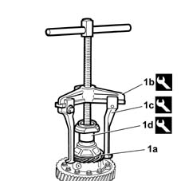

2110D32 milometer drive gear - r + r with inner differential case removed
- Path
- Procedures > 21 GEARBOX > 2110 MANUAL GEARBOX AND DIFFERENTIAL > 2110D manual gearbox differential > 2110D32 milometer drive gear - r + r with inner differential case removed
- Kind
- repair procedure (removal / refitting; the operation number is the code)
- Applies to
- all engines; all production periods
- Interactive page
- https://sloeber94.github.io/elrnDB-lYpsln/en/#/2429779
Applies to: all engines; all production periods
 Removing
Removing
 Refitting
Refitting1. Remove the speedometer idler gear (1a) using the tools (1b), (1c) and (1d).
 | Name | Country |
|---|---|---|
1b | Extractor | 1.840.005.003 |
| Name | Country |
|---|---|---|
1c | Extractor Arms | 1.840.005.302 |
| Name | Country |
|---|---|---|
1d | Fitting tool | 1.875.017.000 |

Applies to: all engines; all production periods
Refitting
RemovingFit the speedometer idler drive gear after having heated it to a temperature of 100° ¸ 120°C.